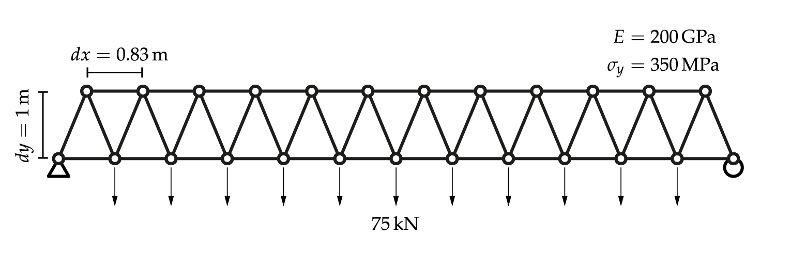
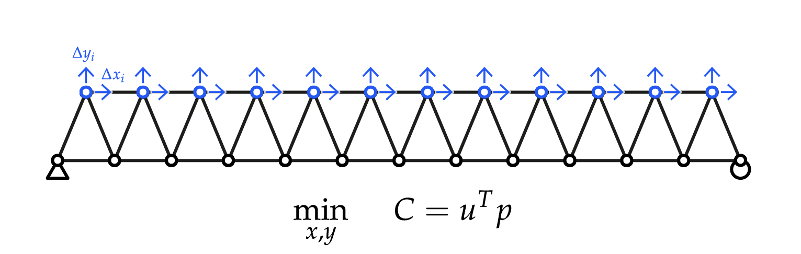
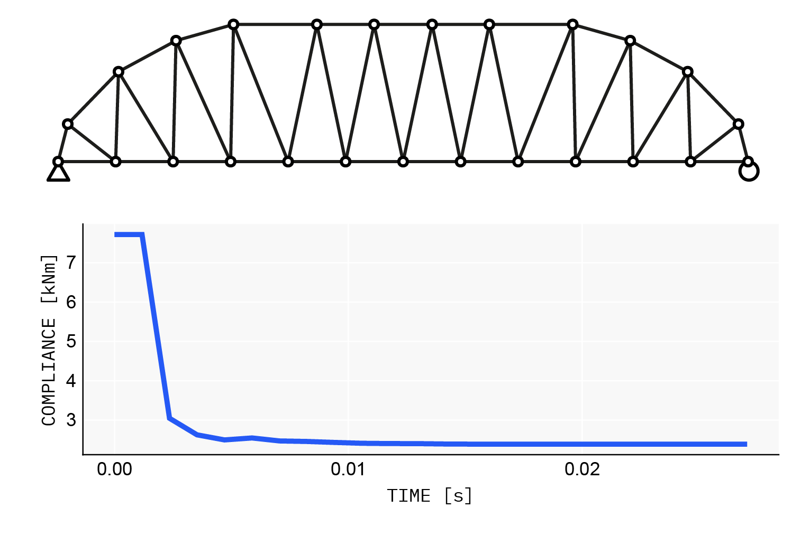

Quick start: geometry optimization
The runnable files for this page are in the repository's examples/ folder. Consider this truss:

Built with Asap:
using Asap
steel = Material(200e6, 80.0, 0.3) # E [force/length²], ρ, ν
section = Section(steel, 0.01) # axial-only, A = 0.01
L = 10.0 # span
nx = 12 # bays
dy = 1.0 # depth
load = 75.0 # per-node load
dx = L / nx
bottom_nodes = [Node([x, 0.0, 0.0], :free, :bottom) for x in range(0, L, nx + 1)]
fixnode!(first(bottom_nodes), :pinned)
fixnode!(last(bottom_nodes), :xfree)
top_nodes = [Node([dx / 2 + dx * (i - 1), dy, 0.0], :free, :top) for i in 1:nx]
bottom_elements = [TrussElement(bottom_nodes[i], bottom_nodes[i+1], section, :bottom) for i in 1:nx]
top_elements = [TrussElement(top_nodes[i], top_nodes[i+1], section, :top) for i in 1:nx-1]
web_elements = [
[TrussElement(nb, nt, section, :web) for (nb, nt) in zip(bottom_nodes[1:end-1], top_nodes)];
[TrussElement(nt, nb, section, :web) for (nt, nb) in zip(top_nodes, bottom_nodes[2:end])]
]
nodes = [bottom_nodes; top_nodes]
elements = AbstractElement{Float64}[bottom_elements; top_elements; web_elements]
loads = AbstractLoad{Float64}[NodeForce(node, [0.0, -load, 0.0]) for node in nodes[:bottom]]
model = Model(nodes, elements, loads)
planarize!(model)
solve!(model)
To find the minimum-compliance (maximum-stiffness) geometry, let every top-chord node move in x and y. A SpatialVariable is an additive offset from the modeled position, so 0.0 starts from the current geometry:
using AsapOptim
using Zygote
xmin, xmax = (-1, 1) .* dx ./ 2 .* 0.9
ymin, ymax = -0.9dy, dy
vars = AbstractVariable[
[SpatialVariable(node, 0.0, xmin, xmax, :X) for node in model.nodes[:top]];
[SpatialVariable(node, 0.0, ymin, ymax, :Y) for node in model.nodes[:top]]
]
params = OptParams(model, vars)
x0 = copy(params.values) # the optimizer's starting point
length(x0)24The objective is one line. solve_structure evaluates a design, and compliance reduces it to the scalar Fᵀu:
OBJ = x -> compliance(solve_structure(x, params), params)
value, grad = Zygote.withgradient(OBJ, x0) # value and exact gradient, no extra setup
value7.714179687500055Optimize with anything gradient-based. Here is L-BFGS through Nonconvex.jl:
using Nonconvex, NonconvexNLopt
optmodel = Nonconvex.Model(OBJ)
addvar!(optmodel, params.lb, params.ub)
res = optimize(optmodel, NLoptAlg(:LD_LBFGS), x0,
options = NLoptOptions(maxeval = 500, maxtime = 60))
model2 = updatemodel(params, res.minimizer) # a solved Asap.Model of the optimum
Next: constrain the problem and size the members too (Constrained optimization and AD), or see every variable type (Design variables).